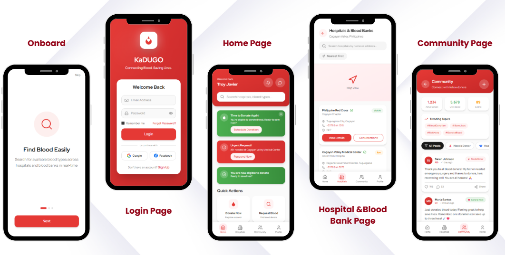

MOBILE APPLICATION · CAPSTONE
kaDUGO
A mobile blood donation and inventory monitoring application designed to connect donors, hospitals, and blood banks with donation information, blood requests, inventory monitoring, and community updates.
ASK ABOUT PROJECT ↗